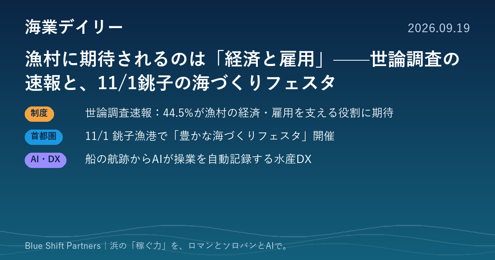

2026.09.19
漁村に期待されるのは「経済と雇用」——世論調査の速報と、11/1銚子の海づくりフェスタ

国の世論調査で、水産業には「地域の経済を支える基幹産業」としての役割にも期待が集まっていることがわかりました。千葉では、来年の全国豊かな海づくり大会に向けたプレイベントが11月1日に銚子漁港で開かれます。あわせて、水産DXの実装事例を紹介します。
水産業に関する世論調査（速報）が公表。44.5%が「漁村の経済・雇用を支える役割」に期待
水産庁が9月4日、水産業に関する世論調査の速報を公表しました。全国の18歳以上3,000人を対象に郵送で実施し、1,522人が回答（回収率50.7%）。水産業に期待する機能は「水産物の安定供給」が81%と最も多く、「経済などを維持する地域の基幹産業としての機能」も44.5%にのぼりました。「観光などで漁村を訪れ、地域住民と交流したい」という人も23.7%いました。
ここがポイント：海業は「漁村の所得と雇用」を生み出すための政策です。住民や議会に海業の必要性を説明するとき、この調査結果は客観的な根拠として使えます。
出典：水産庁「水産業に関する世論調査（速報）の概要について」（2026-09-04）
11月1日、銚子漁港で「豊かな海づくりフェスタ」。来年の全国大会（旭・銚子）の1年前プレイベント
令和9年11月14日に旭市と銚子市で開かれる「第46回全国豊かな海づくり大会」の1年前プレイベントとして、11月1日（日）10時から銚子漁港第3卸売市場で「豊かな海づくりフェスタ」が開かれます。ステージイベントのほか、キンメダイや生マグロ丼などの販売・試食、タッチプールなどの体験コーナーが予定されています。
ここがポイント：漁港の市場を会場に「食」と「体験」で人を集める、まさに海業型のイベントです。千葉の漁港にとっては、大会までの1年間が、自分たちの海業を発信できる好機になります。
出典：旭市「第46回全国豊かな海づくり大会1年前プレイベント『豊かな海づくりフェスタ』」（2026-08-27）
船の航跡からAIが操業を自動で記録。「水産DXの社会実装における現状と課題」が公開
学術誌『水産工学』63巻1号で、沿岸漁業のDX実装事例が報告されました。GNSSで船の航跡を細かく記録する機器と、航跡のパターンから操業の中身を推定するAIを組み合わせ、漁業者に手間をかけずに操業データを集める仕組みです。一方で、技術だけが先行すると獲りすぎにつながるおそれがあり、資源管理と一体で進める必要があると指摘しています。
ここがポイント：「記録の手間をゼロにする」ことが、高齢化が進む浜でデータ活用を定着させる鍵です。海業でも、客数や売上の記録を自動化する発想がそのまま使えます。
出典：J-STAGE『水産工学』63巻1号（水上陽介、オーシャンソリューションテクノロジー株式会社）（2026-07-31）
世論調査では、水産業に地域の基幹産業としての役割を期待する声が4割を超え、漁村を訪れて交流したい人も2割以上いました。この期待を実際の売上と雇用に変えるのが海業です。食堂・直売・体験といったメニューを、季節変動や人手不足を踏まえた収支計画に落とし込む。そこから始めたい浜のみなさま、ぜひご相談ください。